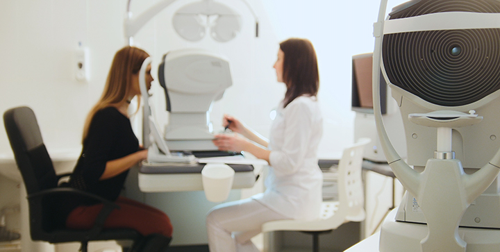

Health Care.
For Hole Family In healthcare sector,service excellence is the facility of the hospital as healthcare service provider to consistently.
Hospitality
Clinical excellence must be the priority
for any healthcare service provider.
Emergency Care
Clinical excellence must be the priority
for any healthcare service provider.
Chamber Service
Clinical excellence must be the priority
for any healthcare service provider.

Longevity News Alert
Dear Future Centenarian, I got a recent email from Dr Ron Klatz, co-founder of the organization that put anti-aging medicine on the map, The American Academy of Anti-Aging Medicine (A4M) https://wwwa4mcom/ In fact, they are the group who coined the term “anti-aging,” A4M is a US

Why I Want to Cure Aging
Dear Future Centenarian, Last weekend, I went to a hospital… TWICE Friday eve, I was scheduled for minor surgery Then Sunday, I had to go to the ER due to a post op complication Now, it all sounds worse than it was I’m totally fine But what the weekend did do was give me time to think

Squeeze the Most from Your Medical Advice
Dear Future Centenarian, You know why the advice from a grizzled pro anti-aging medicine doctor is worth so much more than what you'd learn in a PhD program Because you don't actually learn your lesson by reading about it That's just too passive to be effective You learn it best by

Here’s the Value of Your Life
Dear Future Centenarian, What are you worth No, I don’t mean how much money do you have, or what your entire estate is worth I mean, what are YOU worth Most of us get so caught up in business, family, day-to-day living that we never consider the monetary value of our lives That’s
Start Designing a Healthier World
Whether it's at home, the intensive care, or a nursing home, patients deserve the best care technology has to offer. Allowing for smaller designs with lower overhead cost, vibration-free movement and powerful yet energy-efficient drives, Trinamic enables Health Engineers to push the envelope on medical applications. Let's raise the quality of healthcare together with world's most advanced motor and motion control.
Cool
Drive motors the energy-efficient way. Trinamic products automatically reduce current to the minimum needed, keeping the motor cool.
Vibration-Free
Remove vibrations and noise with flawless motion control. Current loops close to a perfect sine wave allow smooth and precise positioning.
Battery-Powered
Battery-powered ICs and miniaturized modules save precious energy and space, allowing you to design portable medical devices that last.
Motion Control for Medical and Healthcare
Risk-elimination in the treatment of patients is a major concern in the medical sector. Embedded motion control is key to reliable and streamlined medical devices and instruments offloading healthcare systems from increasing pressures such as the aging society, limited workforce, and rising costs. Whether it's peristaltic pumps, respirators and ventilators, infusion pumps, radiography or optometry, Trinamic's industry-leading solutions take care of perfect motion control that's reliable and retraceable, so you don't have to.
Peristaltic Pumps
Maintaining cell structure and protein folding is critical for peristaltic pumps used in medical applications. By providing silent, vibration-free control of pumps, StealthChop prevents unwanted shear rates of precious liquids. Combined with other leading solutions such as StallGuard for detecting step loss and CoolStep for energy-efficient operation keeping the motor cool, Trinamic offers perfect control of your pump. Whether it's for dialysis, dosing medication or sanitary pumps, Trinamic's solutions protect material integrity with perfect flow control.
Syringe Infusion Pumps
When it comes to delivering fluids like nutrients and medication to patients, every drop counts. That's why infusion pumps need to precisely control flow rate - independent of fluid friction and without losing track of the dosage. Trinamic's StallGuard™ is specifically designed for syringe pumps to support reliable and repeatable homing without the need for limit switches. Allowing for smallest designs that are silent and energy-efficient, Trinamic's plug-and-play solutions give complete control over dosage devices for highest reliability and traceability.
Medical Ventilators and CPAP Devices
Medical ventilators have come a long way since the iron lung. Ranging from controlled mechanical ventilation to CPAP, ventilators for healthcare and medical use are vital in saving lives. Thanks to Trinamic's driver ICs and board-level solutions for 3-phase BLDC motors, Health Engineers can easily design low-inductance, high-speed drives without having to worry about the motor's current ripple. Together with integrated high-resolution feedback system and field oriented control, Trinamic offers industry-leading control for powerful and energy-efficient drives.
Ophthalmic Devices
Eye-care requires the highest accuracy to prevent false outcomes. Ensuring a correct diagnosis in the shortest time possible, ophthalmic devices require state-of-the-art motor and motion control to position the patient and control the laser. With decades of motor and motion control experience embodied in plug-and-play solutions, Trinamic brings industrial-grade technology to medical and consumer optometry. Save precious resources and optimize product development with silent, reliable, extremely precise and energy-efficient solutions.


Trinamic Open-Source Ventilator
The global outbreak of COVID-19 pushes healthcare systems around the world to their limits and medical companies are working hard to produce the much-needed medical equipment. Besides supporting all sorts of ventilator projects, Trinamic's engineers started to develop an open-source ventilator platform to inspire engineers and medical companies with other ways to design a medical ventilator. Named TOSV - Trinamic Open-Source Ventilator - the platform uses the TMC4671 combined with the TMC6100 stacked on a Raspberry Pi for interfacing.
Battle-Tested
Using battle-tested building blocks such as own IP, schematics, and components, Trinamic cuts down both development cost, time, and risk.
Highest Quality
Trinamic’s Quality Management is ISO9001:2015 and ISO13485:2016 certified, testifying to their commitment to deliver only the highest quality.
Reliable Partners
A global network of reliable partners and suppliers guarantees Trinamic's strong supply chain, including just-in-time delivery.
© 2020 tab. All rights reserved